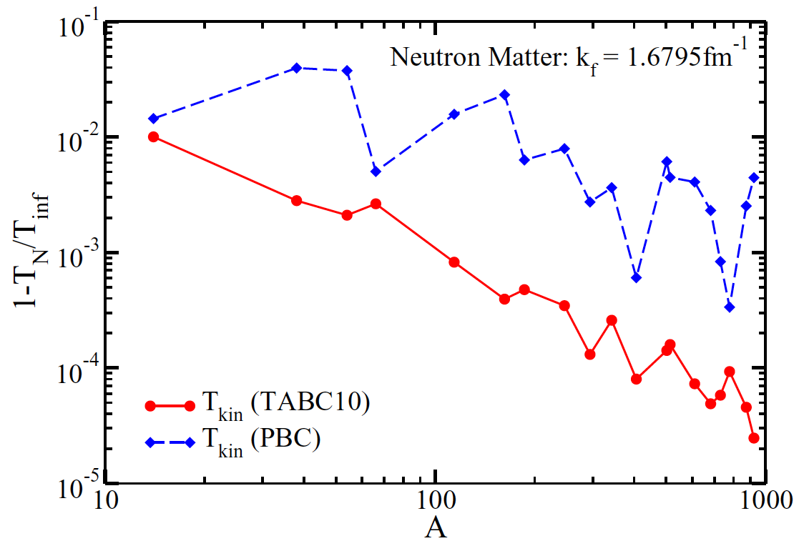
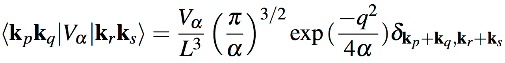
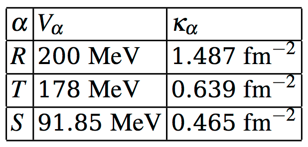

The Coupled Cluster Method
Thomas Papenbrock
The University of Tennessee, Knoxville, tpapenbr@utk.edu
Jul 20, 2018
Table of contents
The Coupled-Cluster Method
Introduction
The normal-ordered Hamiltonian
Exercise 1: Practice in normal ordering
Exercise 2: What does "good" mean?
Exercise 3: How many nuclei are accessible with the coupled cluster method based on spherical mean fields?
The similarity transformed Hamiltonian
Exercise 4: What \( T \) leads to Hermitian \( \overline{H_N} \) ?
Exercise 5: Understanding (non-unitary) similarity transformations
Exercise 6: How many unknowns?
Exercise 7: Why is CCD not exact?
Computing the similarity-transformed Hamiltonian
Exercise 8: When does CCSD truncate?
Exercise 9: Compute the matrix element \( \overline{H}_{ab}^{ij}\equiv \langle ij\vert \overline{H_N}\vert ab\rangle \)
Example: The contribution of \( [F, T_2] \) to \( \overline{H_N} \)
Exercise 10: Assign the correct matrix element \( \langle pq\vert V\vert rs\rangle \) to each of the following diagrams of the interaction
Example: CCSD correlation energy
CCD Approximation
Exercise 11: Derive the CCD equations!
Exercise 12: Computational scaling of CCD
Exercise 13: Factorize the remaining diagrams of the CCD equation
Project 14: (Optional) Derive the CCSD equations!
Solving the CCD equations
CCD for the pairing Hamiltonian
Project 15: Solve the CCD equations for the pairing problem
Nucleonic Matter
Exercise 16: Which symmetries are relevant for nuclear matter?
Basis states
Exercise 17: Determine the basis states
Exercise 18: How large should the basis be?
Exercise 19: Determine the lowest few magic numbers for a cubic lattice.
Finite size effects
Channel structure of Hamiltonian and cluster amplitudes
Example: Channel structure and its usage
The Coupled-Cluster Method
Introduction
The coupled-cluster method is an efficient tool to compute atomic
nuclei with an effort that grows polynomial with system size. While
this might still be expensive, it is now possible to compute nuclei
with mass numbers about \( A\approx 100 \) with this method. Recall that
full configuration interaction (FCI) such as the no-core shell model
exhibits an exponential cost and is therefore limited to light nuclei.
Figure 1: Realistic computations of atomic nuclei with interactions from chiral EFT. The slow increase prior to 2015 is based on quantum Monte Carlo and the no-core shell model. These methods are exponentially expensive (in mass number \( A \)) and meet with exponentially increasing computer power (Moore's law), thus leading to a progress that is linear in time. Methods such as coupled clusters and in-medium SRG carry a polynomial cost in mass number are transforming the field.

The normal-ordered Hamiltonian
We start from the reference state
$$
\begin{equation}
\label{HFref}
\vert\Phi_0\rangle = \prod_{i=1}^A a^\dagger_i \vert 0\rangle
\end{equation}
$$
for the description of a nucleus with mass number \( A \). Usually, this
reference is the Hartree-Fock state, but that is not necessary. In the
shell-model picture, it could also be a product state where the lowest
\( A \) harmonic oscillator states are occupied. Here and in what
follows, the indices \( i,j,k,\ldots \) run over hole states,
i.e. orbitals occupied in the reference state \eqref{HFref}, while
\( a,b,c,\ldots \) run over particle states, i.e. unoccupied
orbitals. Indices \( p,q,r,s \) can identify any orbital. Let \( n_u \) be
the number of unoccupied states, and \( A \) is of course the number of
occupied states. We consider the Hamiltonian
$$
\begin{equation}
\label{Ham} H =
\sum_{pq} \varepsilon^p_q a^\dagger_p a_q +
\frac{1}{4}\sum_{pqrs}\langle pq\vert V\vert rs\rangle
a^\dagger_pa^\dagger_q a_sa_r
\end{equation}
$$
The reference state \eqref{HFref} is a non-trivial vacuum of our theory.
We normal order this Hamiltonian with respect to the nontrivial vacuum
state given by the Hartree-Fock reference and obtain the
normal-ordered Hamiltonian
$$
\begin{equation}
\label{HN}
H_N = \sum_{pq} f_{pq} \left\{a^\dagger_p a_q\right\} + \frac{1}{4}\sum_{pqrs}\langle pq\vert V\vert rs\rangle \left\{a^\dagger_pa^\dagger_q a_sa_r\right\}.
\end{equation}
$$
Here,
$$
\begin{equation}
\label{Fock}
f^p_q = \varepsilon^p_q + \sum_i \langle pi\vert V\vert qi\rangle
\end{equation}
$$
is the Fock matrix. We note that the Fock matrix is diagonal in the
Hartree-Fock basis. The brackets \( \{\cdots\} \) in Eq. \eqref{HN} denote
normal ordering, i.e. all operators that annihilate the nontrivial
vaccum \eqref{HFref} are to the right of those operators that create
with respect to that vaccum. Normal ordering implies that \( \langle
\Phi_0\vert H_N\vert \Phi_0\rangle = 0 \).
Exercise 1: Practice in normal ordering
Normal order the expression \( \sum\limits_{pq}\varepsilon_q^p a^\dagger_p a_q \).
Hint.
$$
\begin{align}
\sum_{pq}\varepsilon_q^p a^\dagger_p a_q
=\sum_{ab}\varepsilon_b^a a^\dagger_a a_b
+\sum_{ai}\varepsilon_i^a a^\dagger_a a_i
+\sum_{ai}\varepsilon_a^i a^\dagger_i a_a
+\sum_{ij}\varepsilon_j^i a^\dagger_i a_j
\label{_auto1}
\end{align}
$$
We note that \( H = E_{HF} + H_N \), where
$$
\begin{align}
E_{HF} &\equiv \langle\Phi_0\vert H\vert \Phi_0\rangle = \sum_{i} \varepsilon^i_i +\frac{1}{2}\sum_{ij}\langle ij\vert V\vert ij\rangle
\label{_auto6}
\end{align}
$$
is the Hartree-Fock energy.
The coupled-cluster method is a very efficient tool to compute nuclei
when a "good" reference state is available. Let us assume that the
reference state results from a Hartree-Fock calculation.
Exercise 2: What does "good" mean?
How do you know whether a Hartree-Fock state is a "good" reference?
Which results of the Hartee-Fock computation will inform you?
If symmetry-restricted Hartree-Fock is used, one is limited to compute
nuclei with closed subshells for neutrons and for protons. On a first
view, this might seem as a severe limitation. But is it?
Exercise 3: How many nuclei are accessible with the coupled cluster method based on spherical mean fields?
If one limits oneself to nuclei with mass number up to
mass number \( A=60 \), how many nuclei can potentially be described with
the coupled-cluster method? Which of these nuclei are potentially
interesting? Why?
The similarity transformed Hamiltonian
There are several ways to view and understand the coupled-cluster
method. A first simple view of coupled-cluster theory is that the
method induces correlations into the reference state by expressing a
correlated state as
$$
\begin{equation}
\label{psi}
\vert\Psi\rangle = e^T\vert\Phi_0\rangle ,
\end{equation}
$$
Here, \( T \) is an operator that induces correlations. We can now demand
that the correlate state \eqref{psi} becomes and eigenstate of the
Hamiltonian \( H_N \), i.e. \( H_N\vert \Psi\rangle = E\vert \Psi\rangle \). This view,
while correct, is not the most productive one. Instead, we
left-multiply the Schroedinger equation with \( e^{-T} \) and find
$$
\begin{equation}
\label{Schroedinger}
\overline{H_N}\vert \Phi_0\rangle = E_c \vert \Phi_0\rangle .
\end{equation}
$$
Here, \( E_c \) is the correlation energy, and the total energy is
\( E=E_c+E_{HF} \). The similarity-transformed Hamiltonian is defined as
$$
\begin{equation}
\label{Hsim}
\overline{H_N} \equiv e^{-T} H_N e^T .
\end{equation}
$$
A more productive view on coupled-cluster theory thus emerges: This
method seeks a similarity transformation such that the uncorrelated
reference state \eqref{HFref} becomes an exact eigenstate of the
similarity-transformed Hamiltonian \eqref{Hsim}.
Exercise 4: What \( T \) leads to Hermitian \( \overline{H_N} \) ?
What are the conditions on \( T \) such that \( \overline{H_N} \) is Hermitian?
As we will see below, coupld-cluster theory employs a non-Hermitian Hamiltonian.
Exercise 5: Understanding (non-unitary) similarity transformations
Show that \( \overline{H_N} \) has the same eigenvalues as \( H_N \) for
arbitrary \( T \). What is the spectral decomposition of a non-Hermitian
\( \overline{H_N} \) ?
To make progress, we have to specify the cluster operator \( T \). In
coupled cluster theory, this operator is
$$
\begin{equation}
\label{Top}
T \equiv \sum_{ia} t_i^a a^\dagger_a a_i + \frac{1}{4}\sum_{ijab}t_{ij}^{ab}
a^\dagger_aa^\dagger_ba_ja_i + \cdots
+ \frac{1}{(A!)^2}\sum_{i_1\ldots i_A a_1 \ldots a_A}
t_{i_1\ldots i_A}^{a_1\ldots a_A} a^\dagger_{a_1}\cdots a^\dagger_{a_A} a_{i_A}\cdots a_{i_1} .
\end{equation}
$$
Thus, the operator \eqref{Top} induces particle-hole (p-h)
excitations with respect to the reference. In general, \( T \) generates
up to \( Ap-Ah \) excitations, and the unknown parameters are the cluster amplitides
\( t_i^a \), \( t_{ij}^{ab} \), ..., \( t_{i_1,\ldots,i_A}^{a_1,\ldots,a_A} \).
Exercise 6: How many unknowns?
Show that the number of unknowns is as large as the FCI dimension of
the problem, using the numbers \( A \) and \( n_u \).
Thus, the coupled-cluster method with the full cluster operator
\eqref{Top} is exponentially expensive, just as FCI. To make progress,
we need to make an approximation by truncating the operator. Here, we
will use the CCSD (coupled clusters singles doubles) approximation,
where
$$
\begin{equation}
\label{Tccsd}
T \equiv \sum_{ia} t_i^a a^\dagger_a a_i + \frac{1}{4}\sum_{ijab}t_{ij}^{ab}
a^\dagger_aa^\dagger_ba_ja_i .
\end{equation}
$$
We need to dermine the unknown cluster amplitudes that enter in CCSD. Let
$$
\begin{align}
\vert\Phi_i^a\rangle &= a^\dagger_a a_i \vert \Phi_0\rangle ,
\label{_auto9}\\
\vert\Phi_{ij}^{ab}\rangle &= a^\dagger_a a^\dagger_b a_j a_i \vert \Phi_0\rangle
\label{_auto10}
\end{align}
$$
be 1p-1h and 2p-2h excitations of the reference. Computing matrix
elements of the Schroedinger Equation \eqref{Schroedinger} yields
$$
\begin{align}
\label{ccsd}
\langle \Phi_0\vert \overline{H_N}\vert \Phi_0\rangle &= E_c , \\
\langle \Phi_i^a\vert \overline{H_N}\vert \Phi_0\rangle &= 0 ,
\label{_auto11}\\
\langle \Phi_{ij}^{ab}\vert \overline{H_N}\vert \Phi_0\rangle &= 0 .
\label{_auto12}
\end{align}
$$
The first equation states that the coupled-cluster correlation energy
is an expectation value of the similarity-transformed Hamiltonian. The
second and third equations state that the similarity-transformed
Hamiltonian exhibits no 1p-1h and no 2p-2h excitations. These
equations have to be solved to find the unknown amplitudes \( t_i^a \) and
\( t_{ij}^{ab} \). Then one can use these amplitudes and compute the
correlation energy from the first line of Eq. \eqref{ccsd}.
We note that in the CCSD approximation the reference state is not an
exact eigenstates. Rather, it is decoupled from simple states but
\( \overline{H} \) still connects this state to 3p-3h, and 4p-4h states
etc.
At this point, it is important to recall that we assumed starting from
a "good" reference state. In such a case, we might reasonably expect
that the inclusion of 1p-1h and 2p-2h excitations could result in an
accurate approximation. Indeed, empirically one finds that CCSD
accounts for about 90% of the corelation energy, i.e. of the
difference between the exact energy and the Hartree-Fock energy. The
inclusion of triples (3p-3h excitations) typically yields 99% of the
correlation energy.
We see that the coupled-cluster method in its CCSD approximation
yields a similarity-transformed Hamiltonian that is of a two-body
structure with respect to a non-trivial vacuum. When viewed in this
light, the coupled-cluster method "transforms" an \( A \)-body problem
(in CCSD) into a two-body problem, albeit with respect to a nontrivial
vacuum.
Exercise 7: Why is CCD not exact?
Above we argued that a similarity transformation preserves all eigenvalues. Nevertheless, the CCD correlation energy is not the exact correlation energy. Explain!
Computing the similarity-transformed Hamiltonian
The solution of the CCSD equations, i.e. the second and third line of
Eq. \eqref{ccsd}, and the computation of the correlation energy
requires us to compute matrix elements of the similarity-transformed
Hamiltonian \eqref{Hsim}. This can be done with the
Baker-Campbell-Hausdorff expansion
$$
\begin{align}
\label{BCH}
\overline{H_N} &= e^{-T} H_N e^T \\
&=H_N + \left[ H_N, T\right]+ \frac{1}{2!}\left[ \left[ H_N, T\right], T\right]
+ \frac{1}{3!}\left[\left[ \left[ H_N, T\right], T\right], T\right] +\ldots .
\label{_auto13}
\end{align}
$$
We now come to a key element of coupled-cluster theory: the cluster
operator \eqref{Top} consists of sums of terms that consist of particle
creation and hole annihilation operators (but no particle annihilation
or hole creation operators). Thus, all terms that enter \( T \) commute
with each other. This means that the commutators in the
Baker-Campbell-Hausdorff expansion \eqref{BCH} can only be non-zero
because each \( T \) must connect to \( H_N \) (but no \( T \) with another
\( T \)). Thus, the expansion is finite.
Exercise 8: When does CCSD truncate?
In CCSD and for two-body Hamiltonians, how many nested
commutators yield nonzero results? Where does the
Baker-Campbell-Hausdorff expansion terminate? What is the (many-body) rank of the resulting \( \overline{H_N} \)?
We see that the (disadvantage of having a) non-Hermitian Hamiltonian
\( \overline{H_N} \) leads to the advantage that the
Baker-Campbell-Hausdorff expansion is finite, thus leading to the
possibility to compute \( \overline{H_N} \) exactly. In contrast, the
IMSRG deals with a Hermitian Hamiltonian throughout, and the infinite
Baker-Campbell-Hausdorff expansion is truncated at a high order when
terms become very small.
We write the similarity-transformed Hamiltonian as
$$
\begin{align}
\overline{H_N}=\sum_{pq} \overline{H}^p_q a^\dagger_q a_p + {1\over 4} \sum_{pqrs} \overline{H}^{pq}_{rs} a^\dagger_p a^\dagger_q a_s a_r + \ldots
\label{_auto14}
\end{align}
$$
with
$$
\begin{align}
\overline{H}^p_q &\equiv \langle p\vert \overline{H_N}\vert q\rangle ,
\label{_auto15}\\
\overline{H}^{pq}_{rs} &\equiv \langle pq\vert \overline{H_N}\vert rs\rangle .
\label{_auto16}
\end{align}
$$
Thus, the CCSD Eqs. \eqref{ccsd} for the amplitudes can be written as
\( \overline{H}_i^a = 0 \) and \( \overline{H}_{ij}^{ab}=0 \).
Exercise 9: Compute the matrix element \( \overline{H}_{ab}^{ij}\equiv \langle ij\vert \overline{H_N}\vert ab\rangle \)
We need to work out the similarity-transformed Hamiltonian of
Eq. \eqref{BCH}. To do this, we write \( T=T_1 +T_2 \) and \( H_N= F +V \),
where \( T_1 \) and \( F \) are one-body operators, and \( T_2 \) and \( V \) are
two-body operators.
Example: The contribution of \( [F, T_2] \) to \( \overline{H_N} \)
The commutator \( [F, T_2] \) consists of two-body and one-body terms. Let
us compute first the two-body term, as it results from a single
contraction (i.e. a single application of \( [a_p, a^\dagger_q] =
\delta_p^q \)). We denote this as \( [F, T_2]_{2b} \) and find
$$
\begin{align*}
[F, T_2]_{2b} &= \frac{1}{4}\sum_{pq}\sum_{rsuv} f_p^q t_{ij}^{ab}\left[a^\dagger_q a_p, a^\dagger_a a^\dagger_b a_j a_i \right]_{2b} \\
&= \frac{1}{4}\sum_{pq}\sum_{abij} f_p^q t_{ij}^{ab}\delta_p^a a^\dagger_q a^\dagger_b a_j a_i \\
&- \frac{1}{4}\sum_{pq}\sum_{abij} f_p^q t_{ij}^{ab}\delta_p^b a^\dagger_q a^\dagger_a a_j a_i \\
&- \frac{1}{4}\sum_{pq}\sum_{abij} f_p^q t_{ij}^{ab}\delta_q^j a^\dagger_a a^\dagger_b a_p a_i \\
&+ \frac{1}{4}\sum_{pq}\sum_{abij} f_p^q t_{ij}^{ab}\delta_q^i a^\dagger_a a^\dagger_b a_p a_j \\
&= \frac{1}{4}\sum_{qbij}\left(\sum_{a} f_a^q t_{ij}^{ab}\right)a^\dagger_q a^\dagger_b a_j a_i \\
&- \frac{1}{4}\sum_{qaij}\left(\sum_{b} f_b^q t_{ij}^{ab}\right)a^\dagger_q a^\dagger_a a_j a_i \\
&- \frac{1}{4}\sum_{pabi}\left(\sum_{j} f_p^j t_{ij}^{ab}\right)a^\dagger_a a^\dagger_b a_p a_i \\
&+ \frac{1}{4}\sum_{pabj}\left(\sum_{i} f_p^i t_{ij}^{ab}\right)a^\dagger_a a^\dagger_b a_p a_j \\
&= \frac{1}{2}\sum_{qbij}\left(\sum_{a} f_a^q t_{ij}^{ab}\right)a^\dagger_q a^\dagger_b a_j a_i \\
&- \frac{1}{2}\sum_{pabi}\left(\sum_{j} f_p^j t_{ij}^{ab}\right)a^\dagger_a a^\dagger_b a_p a_i .
\end{align*}
$$
Here we exploited the antisymmetry \( t_{ij}^{ab} = -t_{ji}^{ab} =
-t_{ij}^{ba} = t_{ji}^{ba} \) in the last step. Using \( a^\dagger_q a^\dagger_b a_j a_i = -a^\dagger_b a^\dagger_q a_j a_i \) and \( a^\dagger_a a^\dagger_b a_p a_i = a^\dagger_a a^\dagger_b a_i a_p \), we can make the expression
manifest antisymmetric, i.e.
$$
\begin{align*}
[F, T_2]_{2b}
&= \frac{1}{4}\sum_{qbij}\left[\sum_{a} \left(f_a^q t_{ij}^{ab}-f_a^b t_{ij}^{qa}\right)\right]a^\dagger_q a^\dagger_b a_j a_i \\
&- \frac{1}{4}\sum_{pabi}\left[\sum_{j} \left(f_p^j t_{ij}^{ab}-f_i^j t_{pj}^{ab}\right)\right]a^\dagger_a a^\dagger_b a_p a_i .
\end{align*}
$$
Thus, the contribution of \( [F, T_2]_{2b} \) to the matrix element \( \overline{H}_{ij}^{ab} \) is
$$
\begin{align*}
\overline{H}_{ij}^{ab} \leftarrow \sum_{c} \left(f_c^a t_{ij}^{cb}-f_c^b t_{ij}^{ac}\right) - \sum_{k} \left(f_j^k t_{ik}^{ab}-f_i^k t_{jk}^{ab}\right)
\end{align*}
$$
Here we used an arrow to indicate that this is just one contribution
to this matrix element. We see that the derivation straight forward,
but somewhat tedious. As no one likes to commute too much (neither in
this example nor when going to and from work), and so we need a better
approach. This is where diagramms come in handy.
Diagrams
The pictures in this Subsection are taken from Crawford and Schaefer.
By convention, hole lines (labels \( i, j, k,\ldots \)) are pointing down.
Figure 2: This is a hole line.

By convention, particle lines (labels \( a, b, c,\ldots \)) are pointing up.
Figure 3: This is a particle line.

Let us look at the one-body operator of the normal-ordered Hamiltonian, i.e. Fock matrix. Its diagrams are as follows.
Figure 4: The diagrams corresponding to \( f_a^b \). The dashed line with the 'X' denotes the interaction \( F \) between the incoming and outgoing lines. The labels \( a \) and \( b \) are not denoted, but you should label the outgoing and incoming lines accordingly.

Figure 5: The diagrams corresponding to \( f_i^j \). The dashed line with the 'X' denotes the interaction \( F \) between the incoming and outgoing lines.

Figure 6: The diagrams corresponding to \( f_a^i \). The dashed line with the 'X' denotes the interaction \( F \) between the incoming and outgoing lines.

Figure 7: The diagrams corresponding to \( f_i^a \). The dashed line with the 'X' denotes the interaction \( F \) between the incoming and outgoing lines.

We now turn to the two-body interaction. It is denoted as a horizontal
dashed line with incoming and outgoing lines attached to it. We start
by noting that the following diagrams of the interaction are all
related by permutation symmetry.
Figure 8: The diagrams corresponding to \( \langle ai\vert V\vert jb \rangle = - \langle ai\vert V\vert bj \rangle = -\langle ia\vert V\vert jb \rangle = \langle ia\vert V\vert bj\rangle \).

Exercise 10: Assign the correct matrix element \( \langle pq\vert V\vert rs\rangle \) to each of the following diagrams of the interaction
Remember: \( \langle\rm{left-out, right-out}\vert V\vert \rm{left-in, right-in}\rangle \).
a)

b)

c)

Finally, we have the following diagrams for the \( T_1 \) and \( T_2 \) amplitudes.
Figure 9: The horizontal full line is the cluster amplitude with incoming hole lines and outgoing particle lines as indicated.

We are now in the position to construct the diagrams of the
similarity-transformed Hamiltonian, keeping in mind that these
diagrams correspond to matrix elements of \( \overline{H_N} \). The rules
are as follows.
- Write down all topologically different diagrams corresponding to the desired matrix element. Topologically different diagrams differ in the number and type of lines (particle or hole) that connect the Fock matrix \( F \) or the interaction \( V \) to the cluster amplitudes \( T \), but not whether these connections are left or right (as those are related by antisymmetry). As an example, all diagrams in Fig. 8 are topologically identical, because they consist of incoming particle and hole lines and of outgoing particle and hole lines.
- Write down the matrix elements that enter the diagram, and sum over all internal lines.
- The overall sign is \( (-1) \) to the power of [(number of hole lines) – (number of loops)].
- Symmetry factor: For each pair of equivalent lines (i.e. lines that connect the same two operators) multiply with a factor \( 1/2 \). For \( n \) identical vertices, multiply the algebraic expression by the symmery factor \( 1/n! \) to account properly for the number of ways the diagram can be constructed.
- Antisymmetrize the outgoing and incoming lines as necessary.
Please note that this really works. You could derive these rules for
yourself from the commutations and factors that enter the
Baker-Campbell-Hausdorff expansion. The sign comes obviously from the
arrangement of creation and annilhilation operators, while the
symmetry factor stems from all the different ways, one can contract
the cluster operator with the normal-ordered Hamiltonian.
Example: CCSD correlation energy
The CCSD correlation energy, \( E_c= \langle
\Phi_0\vert \overline{H_N}\vert \Phi_0\rangle \), is the first of the CCSD
equations \eqref{ccsd}. It is a vacuum expectation value and thus
consists of all diagrams with no external legs. There are three such diagrams:
Figure 10: Three diagrams enter for the CCSD correlation energy, i.e. all diagrams that leave no external legs.

The correponding algebraic expression is \( E_c=\sum_{ia}f^i_a t_i^a +{1\over 4}\sum_{ijab} \langle ij\vert V\vert ab\rangle t_{ij}^{ab} + {1\over 2} \sum_{ijab} \langle ij\vert V\vert ab\rangle t_i^a t_j^b \).
The first algebraic expression is clear. We have one hole line and one
loop, giving it a positive sign. There are no equivalent lines or
vertices, giving it no symmetry factor. The second diagram has two
loops and two hole lines, again leading to a positive sign. We have a
pair of equivalent hole lines and a pair of equivalent particle lines,
each giving a symmetry factor of \( 1/2 \). The third diagram has two
loops and two hole lines, again leading to a positive sign. We have
two indentical vertices (each connecting to a \( T_1 \) in the same way)
and thus a symmetry factor \( 1/2 \).
CCD Approximation
In what follows, we will consider the coupled cluster doubles (CCD)
approximation. This approximation is valid in cases where the system
cannot exhibit any particle-hole excitations (such as nuclear matter
when formulated on a momentum-space grid) or for the pairing model (as
the pairing interactions only excites pairs of particles). In this
case \( t_i^a=0 \) for all \( i, a \), and \( \overline{H}_i^a=0 \). The CCD
approximation is also of some sort of leading order approximation in
the Hartree-Fock basis (as the Hartree-Fock Hamiltonian exhibits no
particle-hole excitations).
Exercise 11: Derive the CCD equations!
Let us consider the matrix element \( \overline{H}_{ij}^{ab} \). Clearly,
it consists of all diagrams (i.e. all combinations of \( T_2 \), and a
single \( F \) or \( V \) that have two incoming hole lines and two outgoing
particle lines. Write down all these diagrams.
Hint.
Start systematically! Consider all combinations of \( F \) and \( V \) diagrams with 0, 1, and 2 cluster amplitudes \( T_2 \).
Let us now turn to the computational cost of a CCD computation.
Exercise 12: Computational scaling of CCD
For each of the diagrams in Fig. 11 write down the
computational cost in terms of the number of occupied \( A \) and the
number of unoccupied \( n_u \) orbitals.
Note that \( n_u\gg A \) in general. In textbooks, one reads that CCD (and
CCSD) cost only \( A^2n_u^4 \). Our most expensive diagrams, however are
\( A^4n_u^4 \). What is going on?
To understand this puzzle, let us consider the last diagram of
Fig. 11. We break up the computation into two steps,
computing first the intermediate
$$
\begin{align}
\chi_{ij}^{kl}\equiv {1\over 2} \sum_{cd} \langle kl\vert V\vert cd\rangle t_{ij}^{cd}
\label{_auto17}
\end{align}
$$
at a cost of \( A^4n_u^2 \), and then
$$
\begin{align}
{1\over 2} \sum_{kl} \chi_{ij}^{kl} t_{kl}^{ab}
\label{_auto18}
\end{align}
$$
at a cost of \( A^4n_u^2 \). This is affordable. The price to pay is the
storage of the intermediate \( \chi_{ij}^{kl} \), i.e. we traded
memory for computational cycles. This trick is known as
"factorization."
Exercise 13: Factorize the remaining diagrams of the CCD equation
Diagrams 7, 8, and 9 of Fig. 11 also need to be factorized.
We are now ready, to derive the full CCSD equations, i.e. the matrix
elements of \( \overline{H}_i^a \) and \( \overline{H}_{ij}^{ab} \).
Project 14: (Optional) Derive the CCSD equations!
a)
Let us consider the matrix element \( \overline{H}_i^a \) first. Clearly, it consists of all diagrams (i.e. all combinations of \( T_1 \), \( T_2 \), and a single \( F \) or \( V \) that have an incoming hole line and an outgoing particle line. Write down all these diagrams.
b)
Let us now consider the matrix element \( \overline{H}_{ij}^{ab} \). Clearly, it consists of all diagrams (i.e. all combinations of \( T_1 \), \( T_2 \), and a single \( F \) or \( V \) that have two incoming hole lines and two outgoing particle lines. Write down all these diagrams and corresponding algebraic expressions.
We can now turn to the solution of the coupled-cluster equations.
Solving the CCD equations
The CCD equations, depicted in Fig. 11, are nonlinear in the
cluster amplitudes. How do we solve \( \overline{H}_{ij}^{ab}=0 \)? We add
\( (f_a^a +f_b^b -f_i^i -f_j^j)t_{ij}^{ab} \) to both sides of
\( \overline{H}_{ij}^{ab}=0 \) and find
$$
\begin{align*}
(f_a^a +f_b^b -f_i^i -f_j^j)t_{ij}^{ab} &= (f_a^a +f_b^b -f_i^i -f_j^j)t_{ij}^{ab} +\overline{H}_{ij}^{ab}
\end{align*}
$$
Dividing by \( (f_a^a +f_b^b -f_i^i -f_j^j) \) yields
$$
\begin{align}
t_{ij}^{ab} &= t_{ij}^{ab} + \frac{\overline{H}_{ij}^{ab}}{f_a^a +f_b^b -f_i^i -f_j^j}
\label{iter}
\end{align}
$$
This equation is of the type \( t=f(t) \), and we solve it by iteration,
i.e. we start with a guess \( t_0 \) and iterate \( t_{n+1}=f(t_n) \), and
hope that this will converge to a solution. We take the perturbative result
$$
\begin{align}
\label{pert}
\left(t_{ij}^{ab}\right)_0 = \frac{\langle ab\vert V\vert ij\rangle}{f_a^a +f_b^b -f_i^i -f_j^j}
\end{align}
$$
as a starting point, compute \( \overline{H}_{ij}^{ab} \), and find a new
\( t_{ij}^{ab} \) from the right-hand side of Eq. \eqref{iter}. We repeat
this process until the amplitudes converge.
CCD for the pairing Hamiltonian
You learned about the pairing Hamiltonian earlier in this
school. Convince yourself that this Hamiltonian does not induce any
1p-1h excitations. Let us solve the CCD equations for this
problem. This consists of the following steps
- Write a function that compute the potential, i.e. it returns a four-indexed array (or tensor). We need \( \langle ab\vert V\vert cd\rangle \), \( \langle ij\vert V\vert kl\rangle \), and \( \langle ab\vert V\vert ij\rangle \). Why is there no \( \langle ab\vert V\vert id\rangle \) or \( \langle ai\vert V\vert jb\rangle \) ?
- Write a function that computes the Fock matrix, i.e. a two-indexed array. We only need \( f_a^b \) and \( f_i^j \). Why?
- Initialize the cluster amplitudes according to Eq. \eqref{pert}, and solve Eq. \eqref{iter} by iteration. The cluster amplitudes \( T_1 \) and \( T_2 \) are two- and four-indexed arrays, respectively.
Please note that the contraction of tensors (i.e. the summation over
common indices in products of tensors) is very user friendly and
elegant in python when numpy.einsum is used.
Project 15: Solve the CCD equations for the pairing problem
Check your results and reproduce Fig 8.5 and Table 8.12 from Lecture Notes in Physics 936.
Nucleonic Matter
We want to compute nucleonic matter using coupled cluster or IMSRG
methods, and start with considering the relevant symmetries.
Exercise 16: Which symmetries are relevant for nuclear matter?
a)
Enumerate continuous and discrete symmetries of nuclear matter.
b)
What basis should we use to implement these symmetries? Why do we have to make a choice between the two continuous symmetries? Which basis is most convenient and why?
Basis states
In what follows, we employ a basis made from discrete momentum states,
i.e. those states \( \vert k_x, k_y, k_z\rangle \) in a cubic box of size \( L \) that
exhibit periodic boundary conditions, i.e. \( \psi_k(x+L) =\psi_k(x) \).
Exercise 17: Determine the basis states
What are the discrete values of momenta admissable in \( (k_x, k_y, k_z) \)?
Thus, we use a cubic lattice in momentum space. Note that the
momentum states \( e^{i k x} \) are not invariant under time reversal
(i.e. under \( k\to -k \)), and also do not exhibit good parity (\( x\to
-x \)). The former implies that the Hamiltonian matrix will in general
be complex Hermitian and that the cluster amplitudes will in general
be complex.
Exercise 18: How large should the basis be?
What values should be chosen for the box size \( L \) and for the maximum number \( n_{\rm max} \) , i.e.
for the discrete momenta \( k = {2\pi n\over L} \) and \( n=0, \pm 1,\
\pm 2, \ldots, \pm n_{\rm max} \)?
Coupled cluster and IMSRG start from a Hartree-Fock reference state,
and we need to think about this next. What are the magic numbers of a
cubic lattice for neutron matter?
Exercise 19: Determine the lowest few magic numbers for a cubic lattice.
Given \( n_{\rm max} \) and \( L \) for the basis parameters, we can choose a
magic neutron number \( N \). Clearly, the density of the system is then
\( \rho=N/L^3 \). This summarizes the requirements for the basis. We
choose \( n_{\rm max} \) as large as possible, i.e. as large as
computationally feasible. Then \( L \) and \( N \) are constrained by the UV
cutoff and density of the system.
Finite size effects
We could also have considered the case of a more generalized boundary
condition, i.e. \( \psi_k(x+L) =e^{i\theta}\psi_k(x) \). Admissable
momenta that fulfill such a boundary condition are \( k_n(\theta) = {2\pi n
+\theta \over L} \). Avering over the "twist" angle \( \theta \) removes
finite size effects, because the discrete momenta are really drawn
form a continuum. In three dimensions, there are three possible twist
angles, and averaging over twist angles implies summing over many
results corresponding to different angles. Thus, the removal of
finite-size effects significantly increases the numerical expense.
An example
is shown in Figure 14, where we compute the kinetic
energy per particle
$$
\begin{align}
T_N(\theta_x,\theta_y,\theta_z)=g_s\sum_{n_x, n_y, n_z \in N} {\hbar^2 \left( k_{n_x}^2(\theta_x) +k_{n_y}^2(\theta_y) +k_{n_z}^2(\theta_z)\right)\over 2m}
\label{_auto25}
\end{align}
$$
and compare with the infinite result \( T_{\rm inf} = {3\over 10}
{\hbar^2 k_F^2\over m} N \) valid for the free Fermi gas. We clearly see
strong shell effects (blue dashed line) and that averaging over the twist angles
(red full line) very much reduces the shell oscillations. We also note that
the neutron number 66 is quite attractive as it exhibits smaller
finite size effects than other of the accessible magic numbers.
Figure 14: Relative finite-size corrections for the kinetic energy in pure neutron matter at the Fermi momentum \( k_F = 1.6795 {\rm fm}^{-1} \) versus the neutron number A. TABC10 are twist-averaged boundary conditions with 10 Gauss-Legendre points in each spatial direction.

Channel structure of Hamiltonian and cluster amplitudes
Good quantum numbers for the nuclear interaction (i.e. operators that
commute with the Hamiltonian and with each other) are total momentum,
and the number of neutrons and protons, and – for simple interactions
– also the spin (this is really spin, not orbital anular momentum or
total angular momentum, as the latter two do not commute with
momentum). Thus the Hamiltonian (and the cluster amplitudes) will
consist of blocks, one for each set of quantum numbers. We call the
set of quantum numbers that label each such block as a "channel."
As the interaction is block diagonal, a numerically efficient
implementation of nuclear matter has to take advantage of this channel
structure. In fact, neutron matter cannot be computed in a numerically
converged way (i.e. for large enough \( n_{\rm max} \)) if one does not
exploit the channel structure.
This means that our simple solution we implemented for the pairing
problem cannot be really re-used when computing neutron matter.
Let us take a look at the Minnesota potential
Figure 15: The Minnesota potential.

Here,
$$
\begin{align}
P^\sigma_{12}&= {1\over 2}(1+\vec{\sigma}_1\cdot\vec{\sigma}_2) , \nonumber\\
P^\tau_{12} &= {1\over 2}(1+\vec{\tau}_1\cdot\vec{\tau}_2)
\label{_auto26}
\end{align}
$$
are spin and isospin exchange operators, respectively, and
\( \vec{\sigma} \) and \( \vec{\tau} \) are vectors of Pauli matrices in spin
and isospin space, respectively. The momentum-space part of the
interaction is shown in Figure 16, with \( q\equiv
(1/2)(k_p-k_q-k_r+k_s) \), and momentum conservation \( k_p+k_q=k_r+k_s \)
is explicit.
Figure 16: The momentum-space matrix elements of the Minnesota potential.

The parameters of the potential are depicted below in Figure 17
Figure 17: Parameters of the Minnesota potential.

For the spin-exchange operator (and spins \( s_1, s_2=\pm 1/2 \)), we have
\( P^\sigma\vert s_1s_2\rangle= \vert s_2s_1\rangle \). The terms \( (1/2)(1\pm
P^\sigma) \) thus project onto the spin triplet \( (+) \) and singlet \( (-) \)
channels. For neutron matter, \( P^\tau=1 \), because the states are
symmetric under exchange of isospin. Thus, the Minnesota potential
simplifies significantly for neutron matter as \( V_T \) does not
contribute.
Example: Channel structure and its usage
For neutron matter and the Minnesota potential, a channel for two-body
states is identified by the conserved quantities of the Hamiltonian,
i.e. total momentum and total spin projection. Let us consider the
\( T_2 \) amplitude. It can be written as
\( t_{ij}^{ab}(S_{12}^z,K_{12}) \). Here, we identified a given channel by
its total momentum, i.e. \( k_i + k_j = K_{12} = k_a +k_b \), and by its
total spin projection, i.e. \( s_i +s_j = S_{12}^z = s_a +s_b \). For a
given reference state, we can thus determine all possible total
momenta \( K_{12} = k_i + k_j \), and we can determine all possible
\( S_{12}^z \). Each allowed combination of \( (K_{12},S_{12}) \) labels a
single channel. We also have all possible hh states
\( \vert ij(K_{12},S_{12})\rangle \), and their number is
\( D_{hh}(K_{12},S_{12}) \). As the interaction preserves
\( (K_{12},S_{12}) \), we can then seek all pp states
\( \vert ab(K_{12},S_{12})\rangle \) corresponding to this channel. Their
number is \( D_{pp}(K_{12},S_{12}) \). Thus
\( t_{ij}^{ab}(S_{12}^z,K_{12}) \) is a rectangular matrix of dimension
\( D_{pp}(K_{12},S_{12}) \times D_{hh}(K_{12},S_{12}) \) that we write as
\( T^{pp}_{hh}(K_{12},S_{12}) \).
Let us consider the fourth diagram in Figure 11, i.e. the
pp-ladder diagram. It uses the pppp part of the two-body interaction
\( V \). This is a square matrix of dimensions \( D_{pp}(K_{12},S_{12})
\times D_{pp}(K_{12},S_{12}) \) for each channel, and we write it as
\( V^{pp}_{pp}(K_{12},S_{12}) \). The result of the contraction can be
written as a rectangular matrix of dimension \( D_{pp}(K_{12},S_{12})
\times D_{hh}(K_{12},S_{12}) \), and will simply be the matrix product
of \( V_{pp}^{pp} T^{pp}_{hh} \). Here we supressed the dependence of the
channel.
Likewise the fifth diagram of Figure 11 can be written as
\( T^{pp}_{hh}V_{hh}^{hh} \) for each channel. It is probably a good idea
to start the nuclear matter project by only using the first five diagrams
of Figure 11.
The other diagrams involving the two-body interaction are more
complicated and cannot simply done as matrix-matrix products. In those
cases, one needs lookup tables that find two-body states for a given
channel.
To summarize: As the interaction is block diagonal, sums over
particles or hole lines are replaced by sums over channels and sums
over the corresponding particle or hole lines in each channel.
The steps towards the solution of the CCD equations for neutron matter are as follows
- For a given density and UV cutoff, set up the lattice.
- Determine the channels allowed by the (Minnesota) interaction, i.e. sets of states that are connected by the interaction.
- Exploit this channel structure when computing the diagrams.
- Solve the coupled-cluster equations. Here we start first with the pp and hh ladders, i.e. using only the first five diagrams of Figure 11.
© 2018, Thomas Papenbrock. Released under CC Attribution-NonCommercial 4.0 license